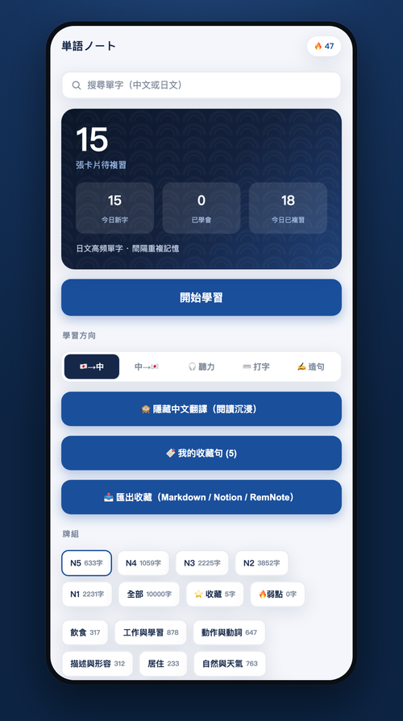
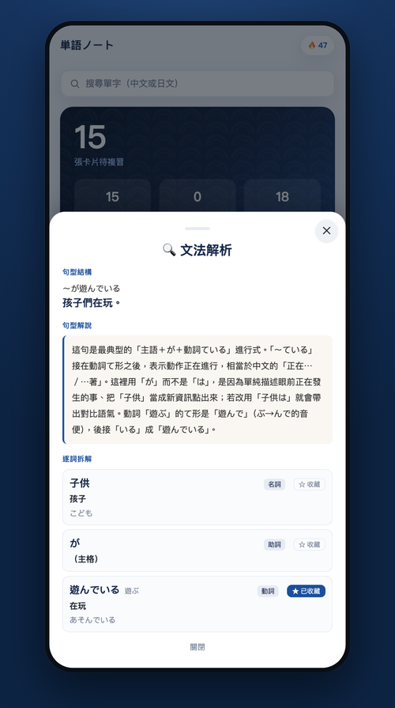
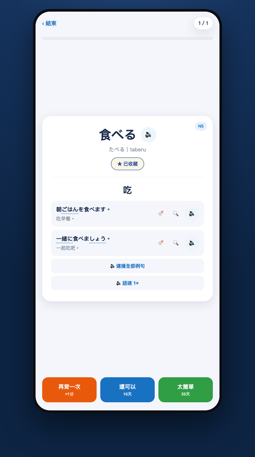
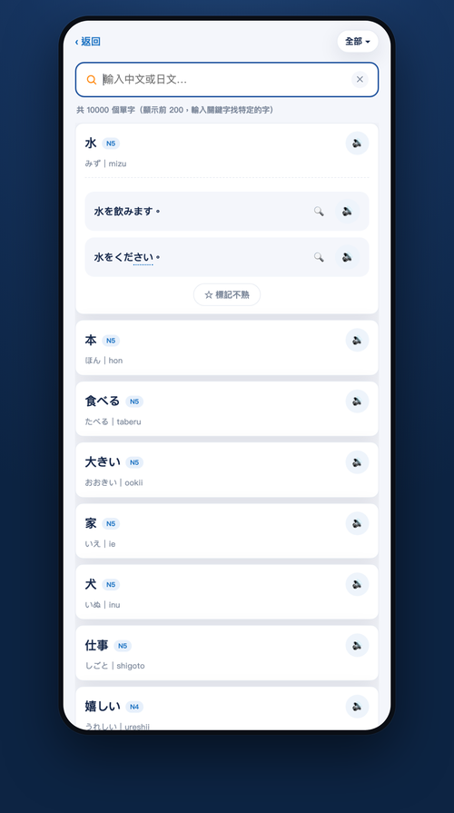
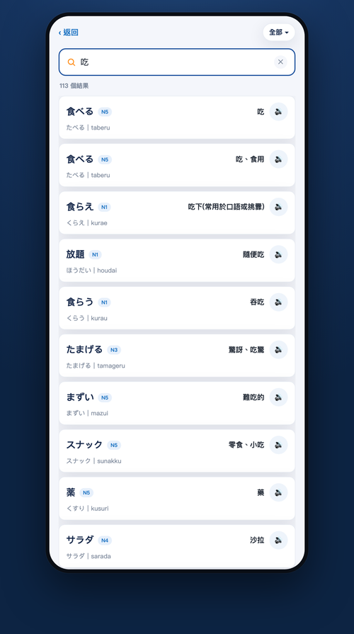
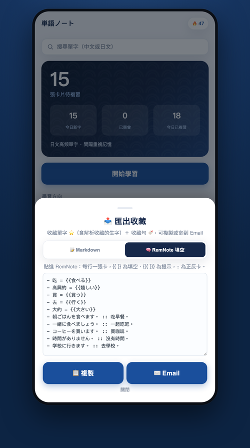
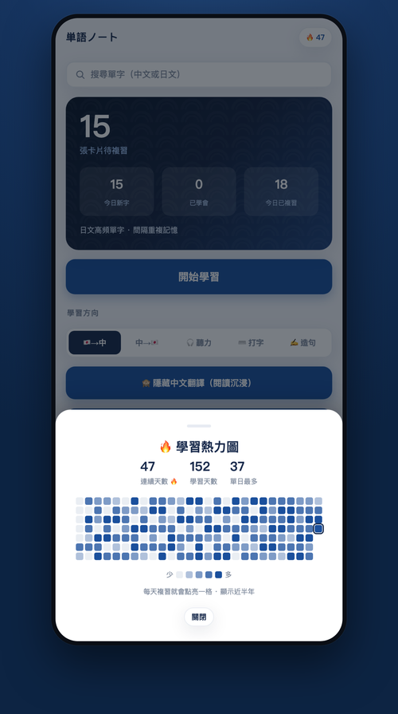

9,238 個日文單字，從五十音到 N1。每一句都能調語速發音，每一句都有老師講解——像在你的筆記本上，一句一句批改。
市面上背單字 App 大多只給你「字＋翻譯」。単語ノート 每一句例句點一下「解說」，就拆到詞性、句型骨架、關鍵文法點，還有一段用繁體中文講給你聽的句型解說。五十音、N5、N4 永遠免費；N3～N1 共 37,882 句一次買斷，離線也能看。
卡背按一下：慢速聽、跟著念、聽它在例句裡怎麼用、把例句遮起來、只看中文把假名打出來。不是狂轟濫炸——是逼你自己想起來一次，那一次才會留下來。
點一下「解說」，整句拆給你看——詞性、逐詞拆解、句型骨架，還有一整段像老師講給你聽的「句型解說」：這個助詞為什麼用它、動詞怎麼變、哪裡最容易錯。離線也能用。
每一句都能調語速。聽不清就放慢到 0.7×，練熟了就加速到 1.5×——用耳朵把發音記進去。
9,238 個字依詞頻與 JLPT 詞表逐字重新校準難度，再全庫逐字稽核——不會再出現「明明很簡單卻被標成 N1」。初學者不被進階詞嚇到，考 N1 的人也有足夠深水區。
44,800 句例句句句都有發音，還能 0.7×–1.5× 五段語速切換，聽不清就放慢多聽幾次。
內建 SRS 演算法，自動排出今天最該複習的字，把時間花在快忘的字上。
中文、漢字、假名、羅馬拼音都能搜；例句點一下就能查裡面的每個字。
不熟的字、喜歡的例句一鍵收藏，組成專屬你的複習牌組。
每句拆解詞性、句型與文法點，例句不只會唸，還看得懂為什麼。五十音／N5／N4 免費，離線可用。
單字、例句、文法、複習全在手機裡，不需連網；發音為線上串流（每段僅 3KB）。
左右滑動看 8 個真實畫面 →







五十音、N5、N4 的文法解說永遠免費；N3～N1 解說 NT$390 一次買斷，不是訂閱。